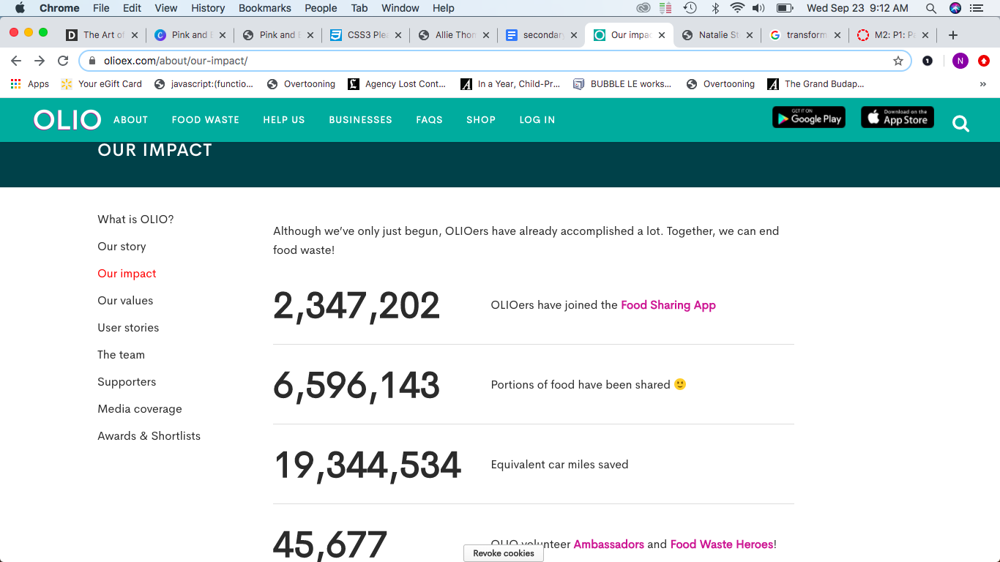
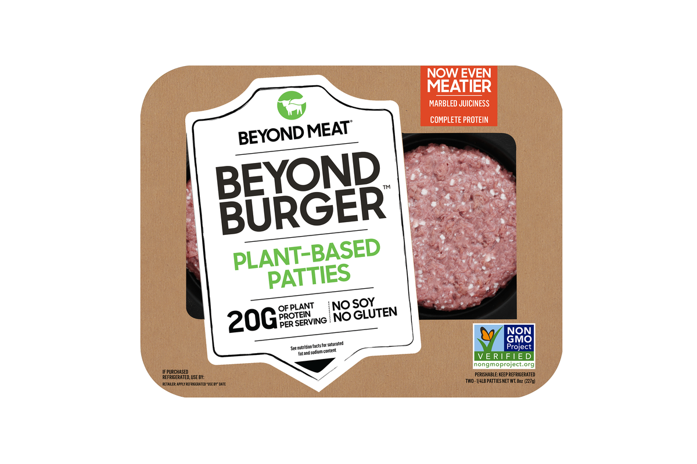
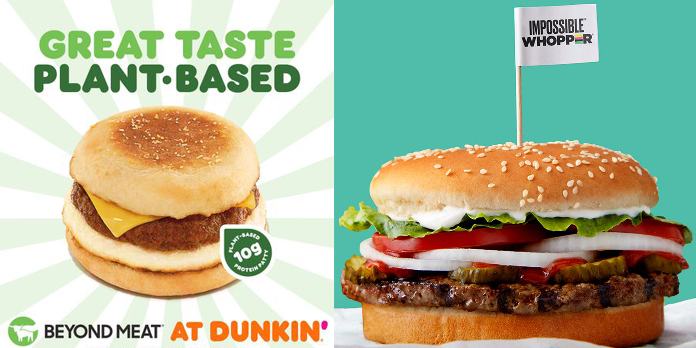

Research
The research portion of this project involved collecting primary and secondary research on and about Ruth's Gleanings.
Primary Client Research

Research on Ruth's Gleanings platform presence
The ultimate goal of Ruth’s gleanings is to empower people in nutritional poverty increasing access to fresh, healthy food. The organization’s main outlets, which they use as means to attempt to achieve their goals, consists primarily of their foodshare, gleaning, and volunteer services. For this initial research, I focused on better understanding these methods and looking into the aspects that were done successfully or needed revision on their platforms.
FoodShare Spartanburg
Ruth’s Gleanings runs a program/service known as Foodshare Spartanburg, which is one of many regional branches of FoodShare South Carolina. This program works to deliver bi-weekly boxes of produce containing 9 to 12 varieties of seasonal, and mostly regionally grown, fruits and vegetables. The box, providing nearly 15-20 lbs of produce, is regularly retailed at an estimated $20 to $30 dollars, however, the cost is intentionally reduced to either $15 dollars cash or $5 SNAP dollars to allow for low-income families to afford produce.
Gleaning
The gleaning aspect of Ruth’s Gleaning focuses on reclaiming excess fresh & healthy food, including produce, prepared meals, as well as perishable items that would otherwise be discarded, by businesses, farms, and independent donors alike. Through this, the organization is able to take steps towards eliminating the gap between food waste and nutritionally insecurity.
Volunteers
Ruth's Gleanings offers the option for people to join their volunteer team. Although the website doesn't specify what exactly volunteering responsibilities entail, based on context it seems that volunteers are tasked with delivery and packaging responsibilities
Education
Ruth's Gleanings wishes not only to provide healthy food assistance but also to address underlying issues and problems with food insecurity through educating and drawing awareness to the issue. The organization works towards this goal by hosting public events, attending conventions, and releasing informational media pertaining to the topic of lacking resources and obtainable access in the local area.

Various Notes
While conducting the primary research, I came about a variety of media pertaining to Ruth’s Gleanings including but not limited to an Instagram page, a Youtube Channel, a Facebook page, a blog site, local news reports and more. While reading and searching these platforms, I collected notes and tidbits of information that could hopefully benefit my understanding of the organization and execution of their web redesign.
Secondary Research

When tasked with finding research pertaining to gleaning, food waste, meal insecurity, or anything that could possibly inspire a solution for problems faced by Ruth’s Gleanings, an abundance of secondary sources emerged. The problem my organization faces is not limited to one local area but is rather found everywhere, United States and beyond. While searching, I came across numerous articles relating to either gleaning, combating food waste, healthy food scarcity, and more. Each and every source offered valuable new perspectives on tackling the issue or bringing awareness to the problem, making it difficult to filter through the massive amounts of available information on the issue. Since we are currently in a state of being that is heavily affected and influenced by Covid 19, many of the initial articles I came across focused primarily on how foodshare programs and gleaning organizations have handled continuing efforts in the wake of the need for newfound safety precautions.
Some organizations and charities that originally functioned by having volunteers physically collect and pick produce from willing farm donors are finding it difficult to adapt to the new required measures created by Covid. Some choose to combat the problem by enforcing mask wearing and distancing when picking produce, others choose to focus efforts on sterilizing products, while some choose to expand distribution spaces to enable proper social distancing of recipients. Although Covid has created an onslaught of new problems towards how gleaning is handled, there are some silver lining effects of the pandemic on food waste. An Organization, known as Love Food Hate Waste, made the discovery that Canadians' shopping habits have changed, due to Corona. As of recent, shoppers shop less frequently, buy products in mas, and are increasingly embracing food-saving strategies. Although we cannot be certain these habits will continue post Covid, we can hope that the effects of the pandemic will enable long term change towards the mentality on food waste. Other organizations are taking on food waste and repurposing to new, incredible levels. In Sweden, researchers from the Swedish Centre for Resource Recovery, at the University of Borås, are working towards the development of converting food waste into valuable biogas, which can in turn be used in the production of animal feed or bio plastics.
Other organizations are taking on food waste and repurposing to new, incredible levels. In Sweden, researchers from the Swedish Centre for Resource Recovery, at the University of Borås, are working towards the development of converting food waste into valuable biogas, which can in turn be used in the production of animal feed or bio plastics.
Britain, facing a similar problem, is utilizing technology as well in hopes of eliminating their problem with food waste. One of their recent and seemingly successful methods is the implementation of a gleaning app that allows users and donors alike to post free available food available free for pickup via private messaging. This approach has seemed to find success, enabling its expansion to reach the U.S platform as of recent. However, awareness and usage of the app is not nearly as common here as it is in Britain, with few users and donors being American based.

When inspecting the Olio app, I found the technological aspect of having a user friendly mobile interface to be something that could be possibly implemented or even just used as inspiration for my approach to solving some of the issues faced by Ruth’s Gleanings. I also found the OLIO’s execution on formatting their information and impacts to be very user friendly and easily digestible when compared to the information provided on Ruth’s Gleanings website, and wish to use a similar method of text formatting if possible on the redesigned Ruth’s interface.
The Rise of Eco Concious Culture
Since the early 21st century, Eco conscious mentalities have been on the rise with the importance of sustainability becoming further understood through consistent research and studies on humanity's environmental impact. Having the topic gain traction in this new age has seemingly led to a change in outlook towards the issue, with younger generations like Millennials and Gen Z, ranking it higher in priority when compared to mindsets of older generations on the matter.
Another change brought about by the popularity of sustainability and new-found movement of eco-friendly living is the increase in plant based substitutions in food. This new strategy at tackling unhealthy eating and pollution generated by the food has strongly impacted the food market, with options for plant based foods being offered in settings spanning from grocery markets to restaurant dining. Even fast food brands, like KFC and Burger King, have begun to incorporate plant based brands into their menus to offer alternatives to meat based products.
A way this shift in consumer mentalities could benefit Ruth’s Geleanings is by having our brand promote and advertise the positive environmental impact our gleaning services create and how by donating and volunteering, users are taking steps towards a more sustainable and eco conscious lifestyle.
Yet another possibility hailing from this that can help Ruth’s Gleaning would be a possible partnership with donors, composed of restaurant and fast food businesses, that offer healthy plant based food options and or healthy menu options. Ruth’s Gleanings could use as many donors as they can get, and if the organization can involve these outlets into their stream of donors, the organization will have a new-found abundance of resources at their hands.
A way to incorporate these changes possibly into the web page redesign is by including a new menu page that specifically targets donors and includes a well explained but brief overview of how to get involved as a donor, as well as how the organization’s accepted forms of donors has increased.
Interviews
After pulling a few strings here and there, the opportunity came about for me to interview a staff member at the organization, as well as a possible user that fit the demographic of one of the determined target audiences of the site. The two People Interviewed were Channing Houser, the FoodShare Coordinator at Ruth’s Gleanings and Amber Cantrell, a single mother with a young child.
FoodShare Coordinator at Ruth’s Gleanings

This link is a screenshot of the full interview with Channing Houser, a staff member of Ruth's Gleanings
This Interview was particularly resourceful in the way that it helped me better understand the organization on a personal level. Through Interviewing Channing, a staff member directly involved with the organization, I was able to learn more about the internal workings of Ruth’s Gleanings and how it interacts and associates with the community around it. Something that Channing brought to my attention that never occurred to me was the lack of access to social media and the internet among recipients of the foodshare community. He explained in further detail that a majority of recipients learn of the organization through a local diabetic clinic and through Word-Of-Mouth from other recipients. Channing also recognized and expressed the need for an update to the website’s design and mentioned his desire for the organization’s media to become more interactive and engaging. Channing also brought up the concern of organizational expansion and need for increased funding and manpower.
A Single Mother with a Young Child and a Possible Recipient of FoodShare
This link is a screenshot of the second interview with Amber Cantrell
Amber Cantrell, while not directly involved with Ruth’s Gleaning’s organization at the moment, would be considered part of the targeted demographic for Ruth’s Gleanings website redesign. Amber, being a young mother, aged 27 with a son, Bryson 4, lives with her mother in their trailer in Inman, SC. Although working full-time, Amber is able to find time to go grocery shopping and cook home meals due to having her mother having the time to be able to provide child care, having become a retiree. Amber mentioned her concern of the high prices of healthy groceries, but said that location and time weren’t concerns for her personally.
After Introduction to the site, Amber did not feel the site to be particularly interesting nor attention grabbing but mentioned that the information provided was helpful, albeit a little hard to navigate. She mentioned the need for the interface to require less clicking and better user searching to be able to better maintain audience engagement.